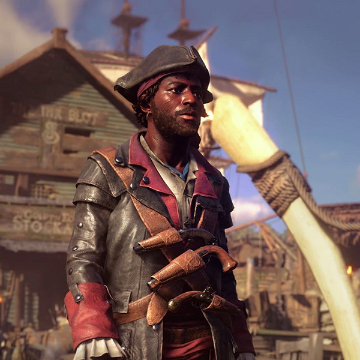
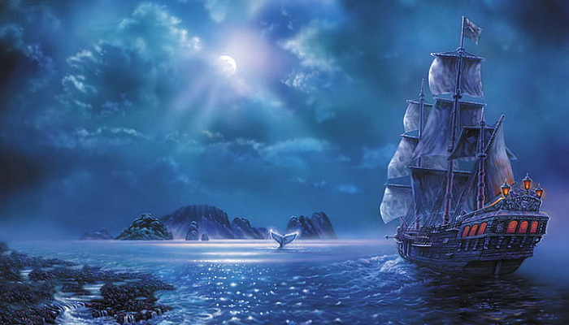

Captain Bohja
Captain Bohja is a 47-year-old dark-skinned human male, with a chaotic-good alignment. He is 5’10 and 180 lbs., with brown eyes and long black hair and a neatly trimmed beard. He usually dresses in white, black, and purple with gold embellishments. He has sharp, discerning eyes, carries himself with subtle confidence, and is rippling with muscle (+3 or +4 Strength). He definitely isn’t the kind of person you want to get into a brawl against. Captain Bohja is a fairly lighthearted person, full of confidence, integrity, and wisdom. Think Uncle Iroh, just maybe not quite that wise or that bonkers.
Bohja grew up in Jerrua and began sailing young. He has been the captain of his own ship and crew for nearly 20 years. He has a family living in Silverwalk (a wife, and 11yo son), and his 19yo daughter is his first mate on his whaling crew (a crew consisting of 29 other people, for a total of 31).
Skills & Languages: Sailing, Navigation, a little bit of carpentry, and several miscellaneous minor skills. Languages he speaks are ‘Common,’ and ‘Sea Jargon.’
Items & Belongings: Bohja’s most precious possession is his whaleship, the Titan's Wave. he goes almost nowhere without his trusty rapier and telescope, and tries whenever possible to carry a single health potion. He wears a necklace with the symbol of Maras around his neck, and a symbol of Rihn hanging from his belt; a keen observer will notice that he wears five more symbols, each to the other Maidens, in various places. He wears some jewelry–mostly gold, but some silver, platinum, gemstones, and even glazed beads–but not a gaudy amount.
Ideals: “The sea is freedom–the freedom to go anywhere and do anything!”
“My loyalties lie with my family and my crew, not some abstract ideal.”
Bonds: “I love the sea but everything I do, I do for my family.”
Flaws: “There is no room for caution in a life lived to the fullest.”
Dreams: “One day I’d like to hunt something bigger than a whale.”
Fears: “I'm foolish to let my daughter on the sea; one day it will claim her from me.”
